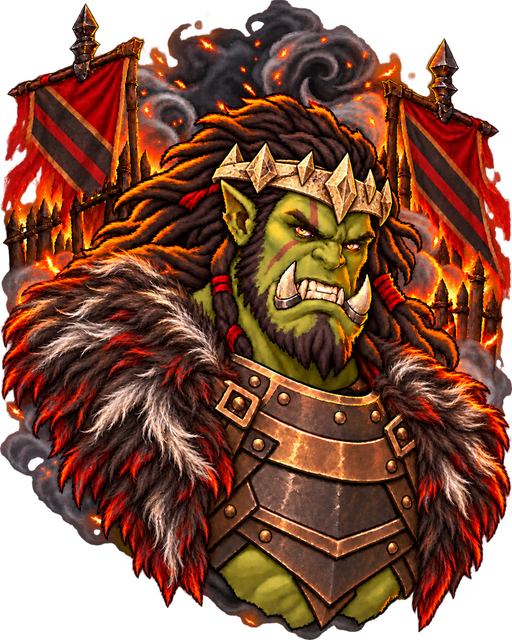
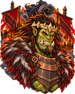
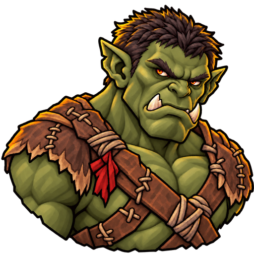
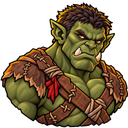
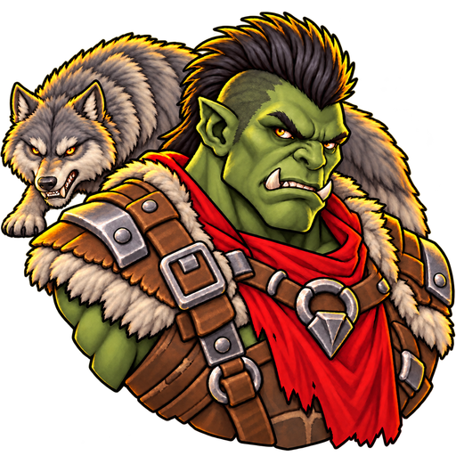
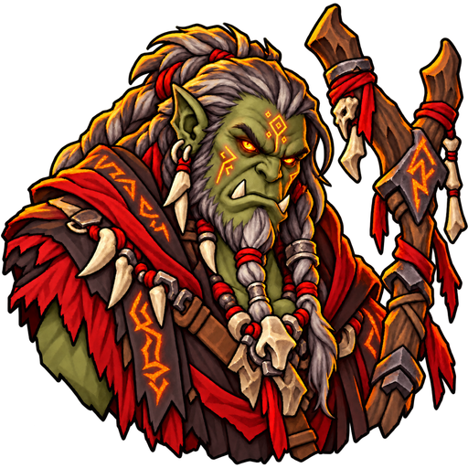
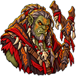
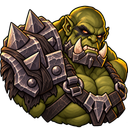
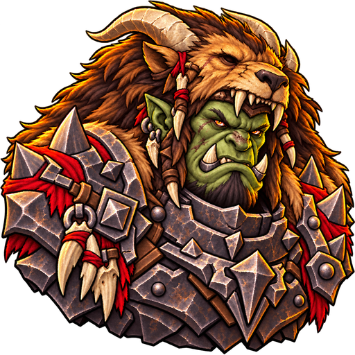
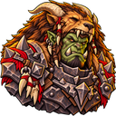

Orc Warlord · bone circlet and mythic pelts
The Warlord has returned to a low circlet-style crown, now carved from bone. The mythic beast pelts remain over his shoulders. The lighter Shaman and the rest of the clan are shown below. These are review concepts; the live game art has not been replaced. Open the one-page lineup.

Warlord: bone crown comparison



Orc host together








